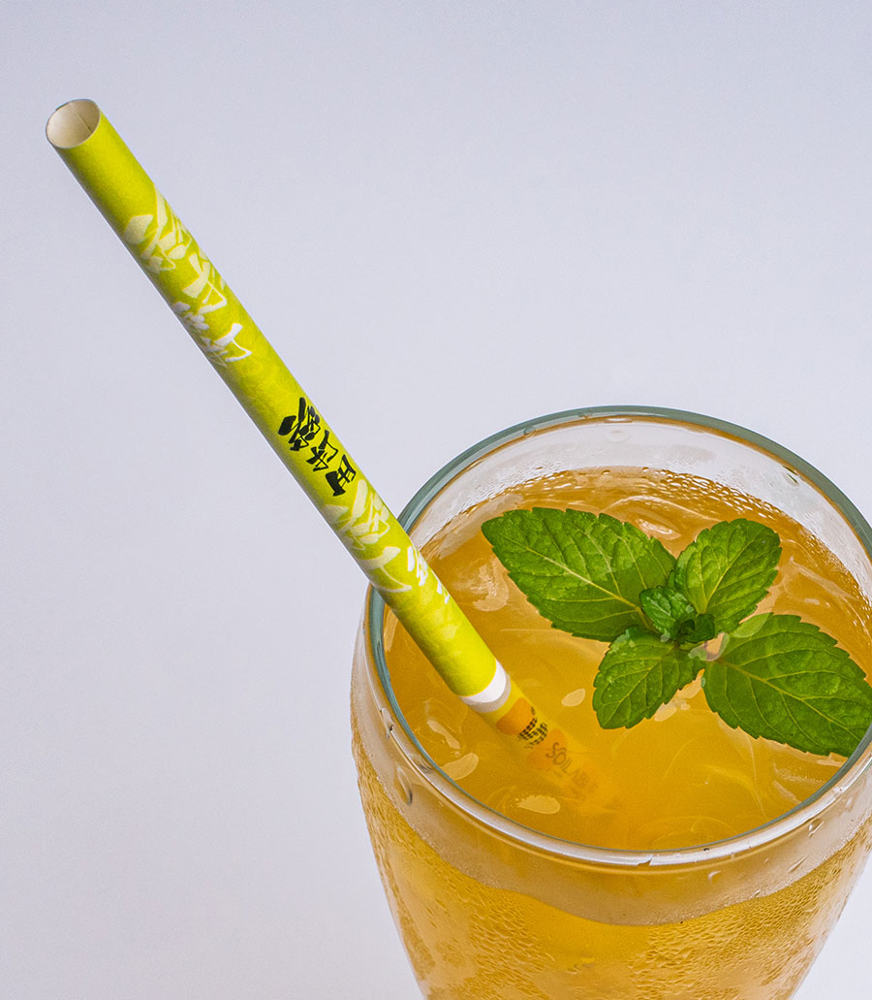

在飲管印上標誌或原創設計，讓品牌融入每杯飲品。
把品牌印在飲管上

不同地區對塗層的要求各有不同。Soilable 可按目標市場及廢物處理方式建議合適系列。
採用水性防水塗層，可與一般廢紙一同回收，並可在數月內於陸地及海洋環境中降解。
採用 BioPBS 生物聚合物塗層，可與紙杯一同回收，適合設有堆肥設施的市場。
採用 oxo-PE 化石聚合物塗層，可與紙杯一同回收，適用於接受此類塗層的市場。
告訴我們所需飲管款式、數量及目標市場。